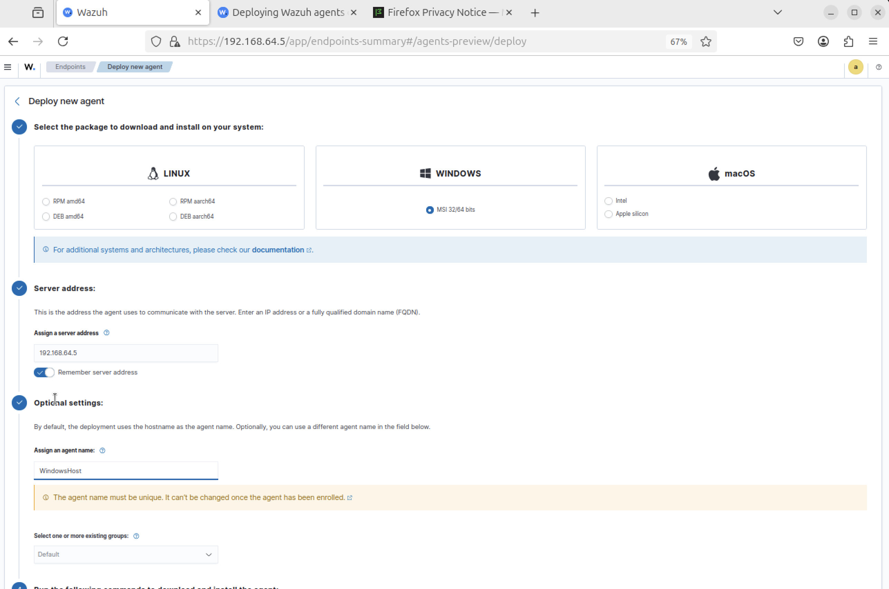

Summary
Hands-on setup of a Wazuh SIEM with Linux and Windows endpoints, validating end-to-end visibility and detections.
- Installed and configured Wazuh server; enrolled Linux and Windows agents
- Verified telemetry (inventory, vulnerabilities, compliance) and ATT&CK mappings
- Generated activity (whoami, sudo, app installs) and observed captured events
- Used Threat Hunting to correlate host actions with detections
Step 1
Install Wazuh server on Ubuntu (SIEM host)

Step 2
Deploy Wazuh agent to monitored endpoint
Step 3
Topology: SIEM (Ubuntu) + endpoint (ubuntu-user) reporting
Step 4
Agent successfully enrolled and active

Step 5
Agent status details verified
Step 6
Inventory, vulnerability, and compliance data visible
Step 7
Baseline before activity (no user actions)
Step 8
MITRE ATT&CK mappings; begin generating events
Step 9
Generate telemetry: whoami on ubuntu-user
Step 10
Privilege escalation attempts (sudo) captured
Step 11
Additional sudo activity and event details
Step 12
Correlated findings for elevation attempts
Step 13

Deploy agent to a Windows host
Step 14
Windows agent enrolled; command execution observed
Step 15
Second endpoint active and reporting
Step 16
Install apps on Windows to generate events
Step 17
Installs via Windows tooling captured
Step 18
More install activity recorded
Step 19